@sopra · section live
SoPra Office Dashboard
A kiosk dashboard for the office — one full-screen 4K display rotating through calendar, parking, highscore, a combined overview and live weather, with an admin area behind it and a FallingCats easter egg on the side. Built as a university team project (Software-Praktikum): Spring Boot 4.1 multi-module backend, Vue 3 kiosk UI, MariaDB, Docker Compose.
Java 21Spring Boot 4.1.1Gradle 9 · 7 modulesMariaDB · LiquibaseVue 3.5 · Vite 7 · Pinia · TailwindOdoo XML-RPC · Open-Meteo · MattermostDocker Compose
The kiosk — interactive replay
Every frame is a real capture from the running stack at 3840×2160 — the kiosk renders one fixed 4K canvas and a Smart Scaler transforms it to fit whatever screen it runs on, so this is the layout as designed. The live display rotates on a configurable interval (15 s default), cuts between views with no crossfade and re-reads its config every 30 s — this replay does the same, just faster. Switch to Admin for the screens behind the glass; click the stage to zoom a frame.
The five views — and the office cats
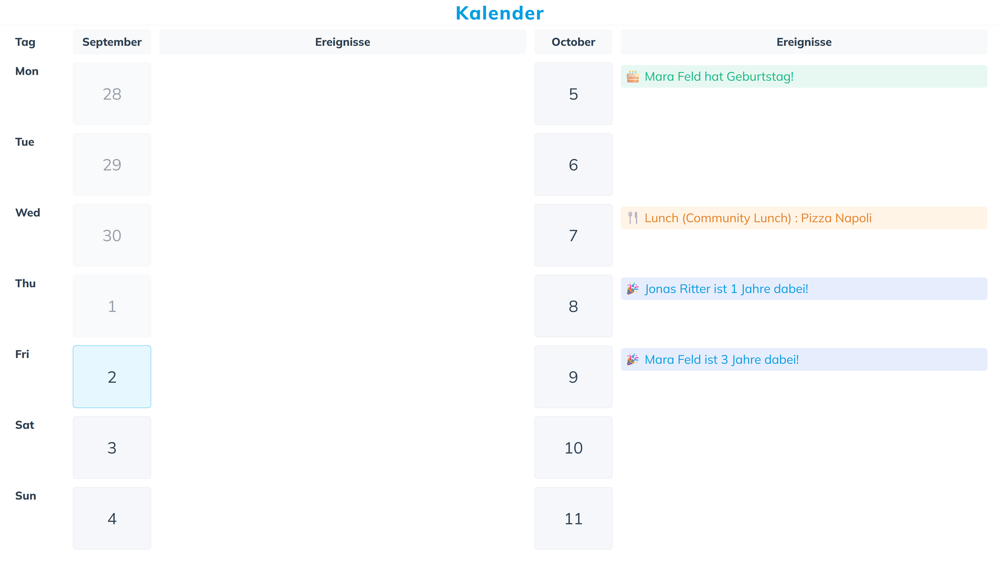
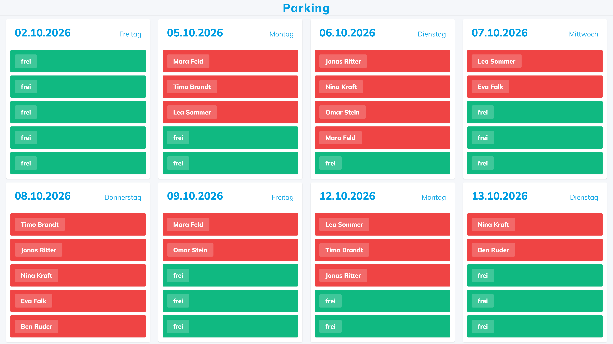
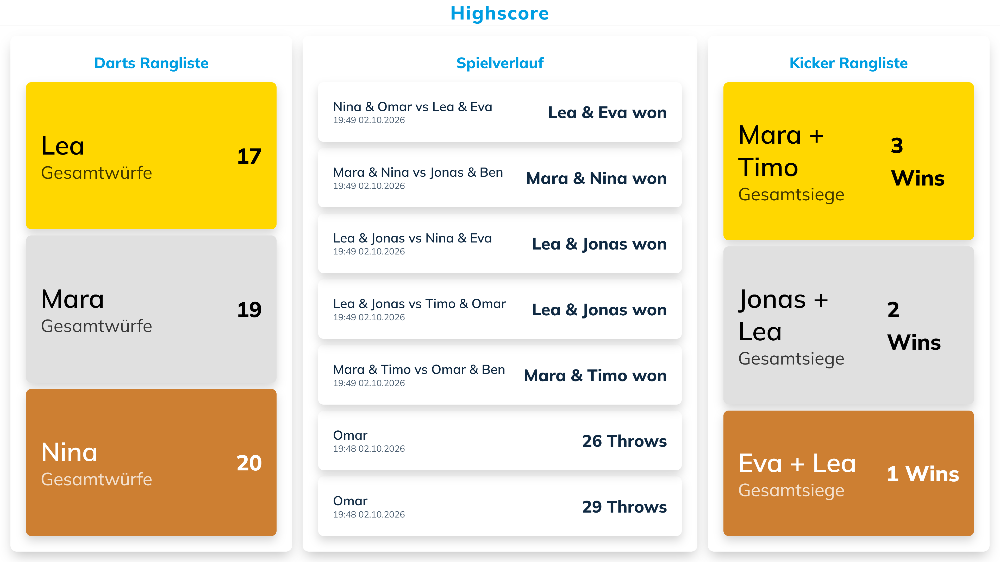
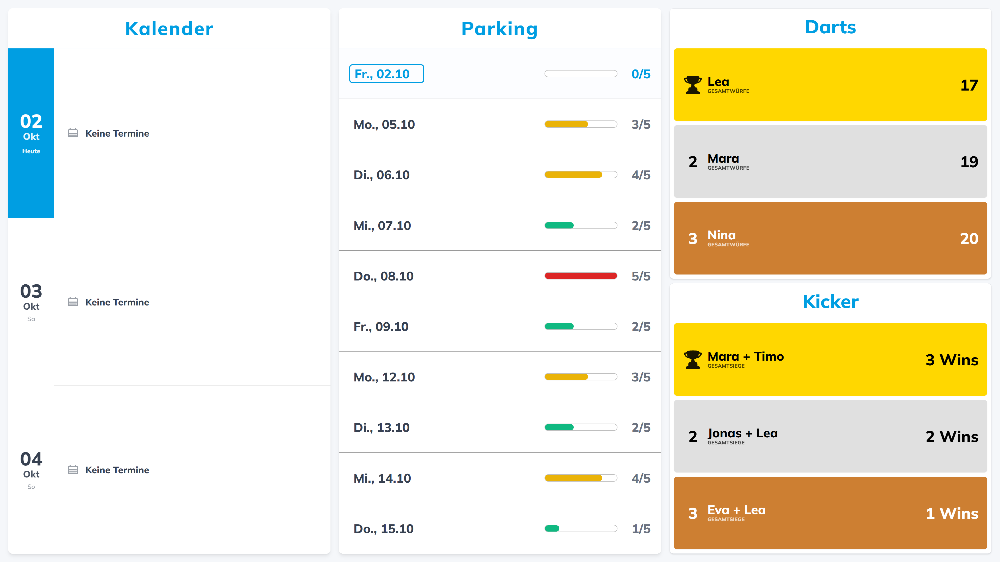
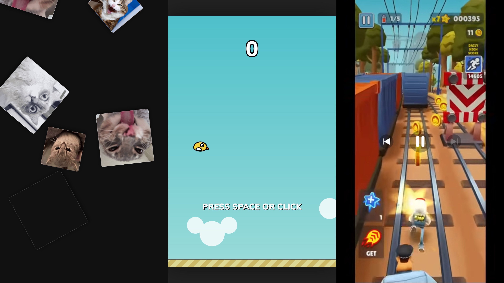
Behind the glass: the admin area
Everything the kiosk shows is managed in a responsive Vue admin (/admin/*) — from a desktop or a phone, through the same REST API the display uses. The whole area sits behind a session login.
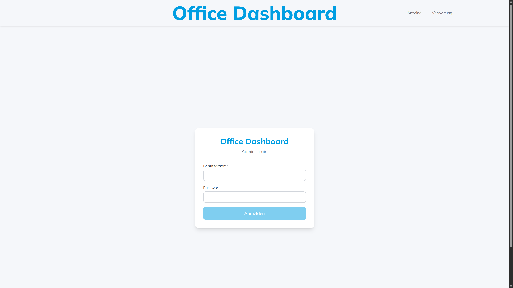
/admin requires a session.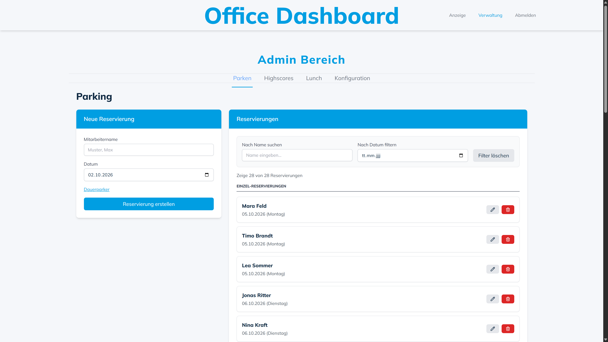
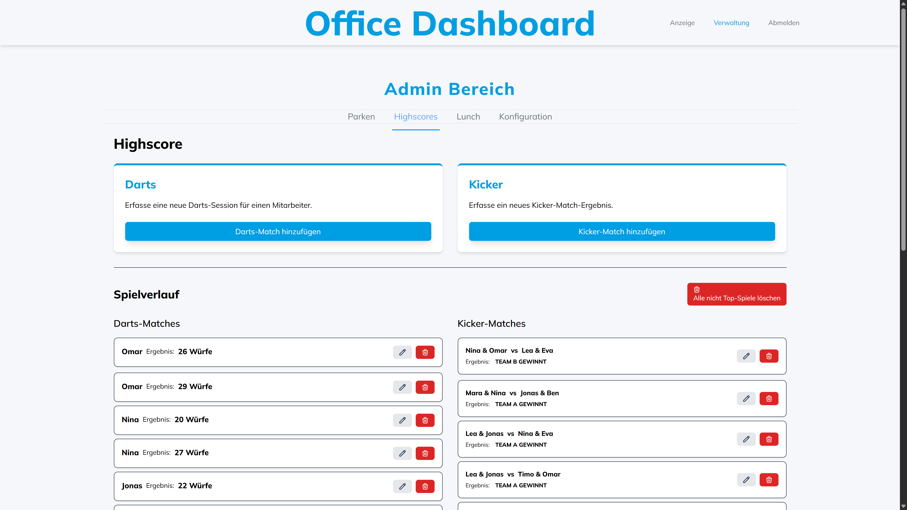
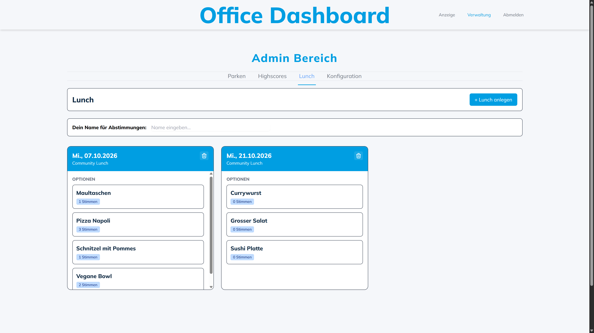
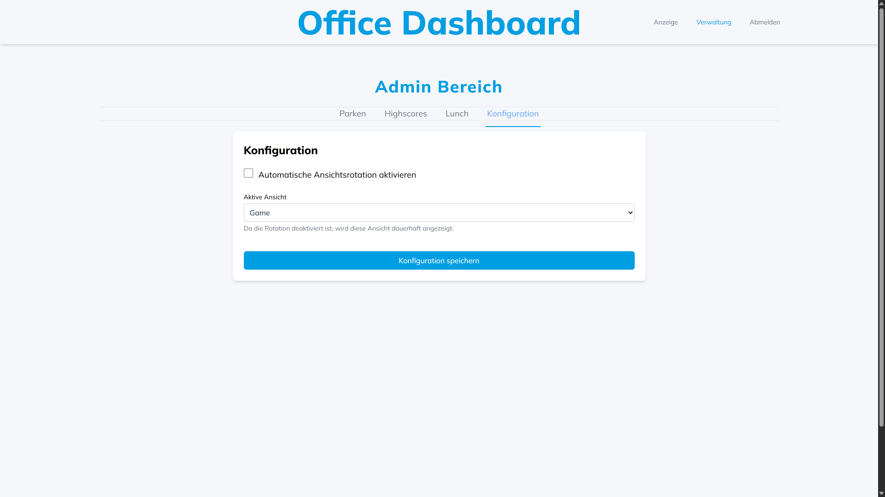
Under the hood: seven modules, one app
backend/ — Gradle 9 · Java 21 · Spring Boot 4.1.1 common/ Mattermost client + shared plumbing module-events/ Odoo XML-RPC → birthdays, anniversaries, probation module-parking/ reservations + daily occupancy module-highscore/ darts ELO + kicker standings module-community-lunches/ events, options, votes, food catalog module-config/ display + rotation settings backend/ runnable app · session security · Liquibase master
frontend/ — Vue 3.5 · Vite 7 · Pinia · Tailwind features/ calendar · parking · highscore · community-lunch · dashboard · game views/ DisplayView (the kiosk) · admin screens composables/ useDisplayScaler · useViewRotation
One runnable jar, clean seams: every feature module owns its controllers, services, entities and changelog, and the schema is fully managed by Liquibase (ddl-auto=validate) — adding a module means registering it in settings.gradle, build.gradle and the master changelog, and applied changesets are never edited. Background work stays quiet: the events module caches Odoo and refreshes daily, and a 12:00 cron pushes upcoming birthdays, anniversaries and new lunch events into the team's Mattermost.
Tests & CI
Every push runs the full pipeline: backend ./gradlew build (compile · Checkstyle · 93 tests · boot jar) and frontend lint, format check, 63 Vitest tests and the production build on Node 22. The backend suite spans all seven modules — 91 run, the two @Disabled ones are the live-Odoo integration tests, kept runnable locally.
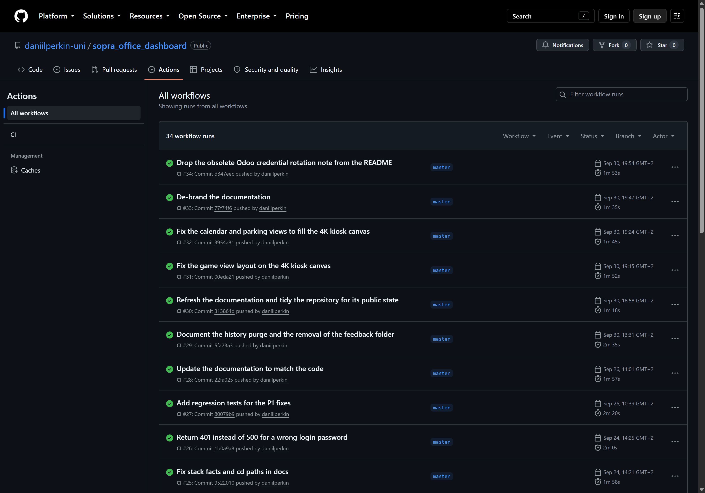
master — the newest runs on the CI page, all green; one workflow covers backend and frontend.$ ./gradlew build # backend — compile · Checkstyle · tests · boot jar $ npm run lint && npm run format:check $ npm run test && npm run build $ docker compose up -d --build # MariaDB + API + kiosk in one command
Source: github.com/daniilperkin-uni/sopra_office_dashboard (public). Captures are from the running Docker stack with fictional demo data — no real employee data.
@pe2-todo-app · section live
PE2 Todo App
A full-stack Todo web app: a Vue 3 + TypeScript SPA on a Spring Boot 4.1 REST API with MariaDB in Docker — and a trained ML classifier that sorts every todo title into work or private as it is saved.
Vue 3.5TypeScript 5.9Vite 7Spring Boot 4.1.1Java 21MariaDB 11.8Docker ComposeJPMML · PMML classifier
The classifier — running in your browser
The backend loads model.pmml (a 38-token TF-IDF linear model, logit-normalized) through JPMML and classifies each todo on create and update — the statistics view splits by the resulting category. This widget runs the same model's arithmetic in JS, ported token-by-token from the PMML: tokenize → idf × coefficient per matched token → signed score → class. Try the chips, or type a title like team car and watch which side of the line it lands on.
Screens from the running app
Real captures of the Docker Compose stack (MariaDB + API + nginx) at 1600×1000 @2×, with demo content seeded through the REST API — fictional names only.
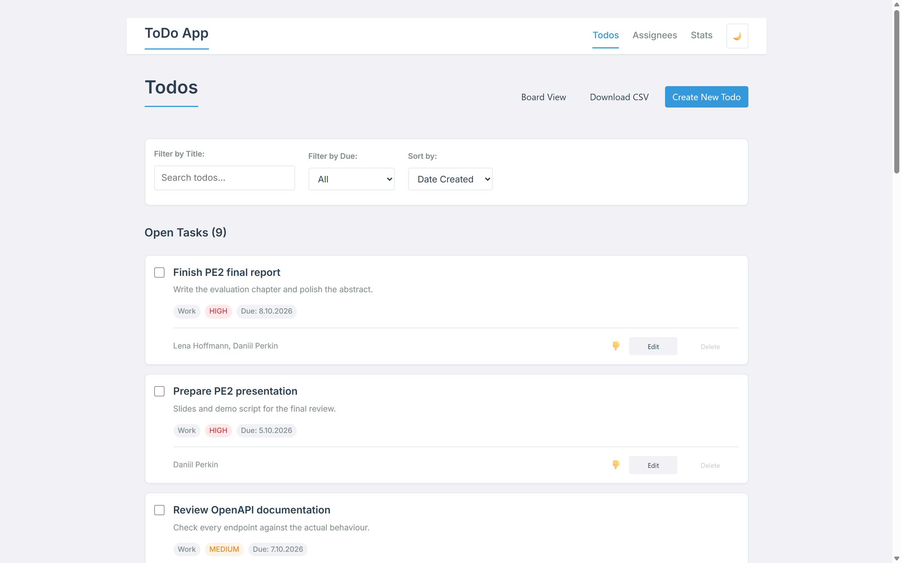
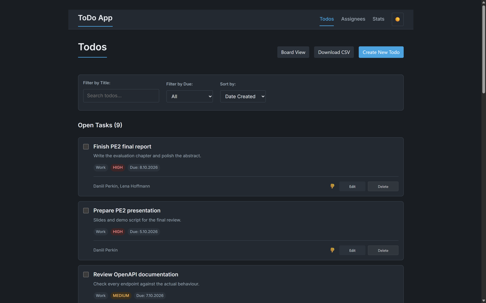
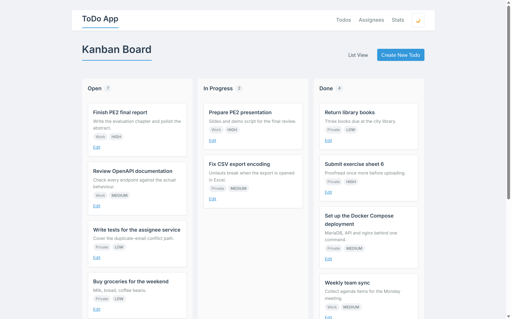
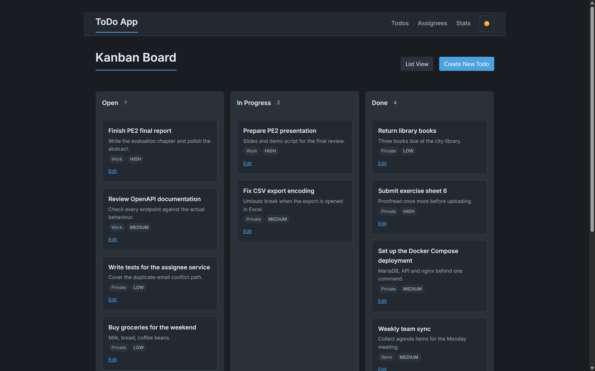
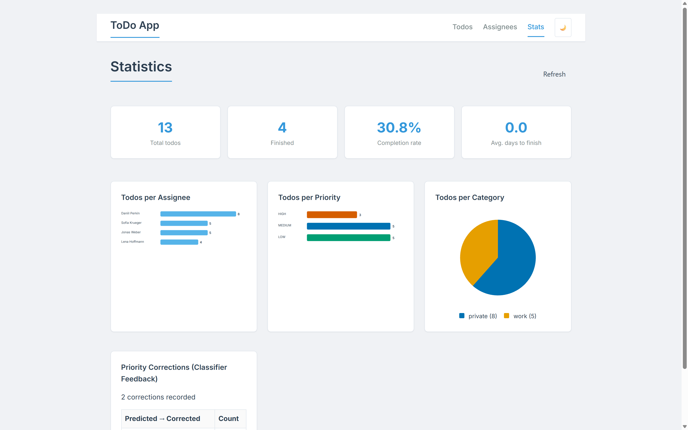
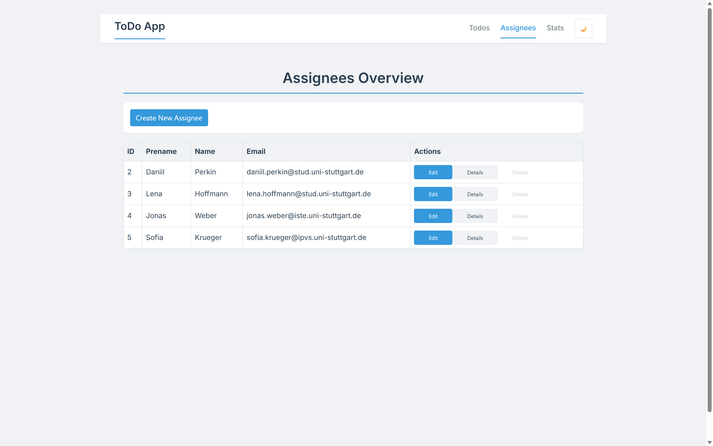
What it does
- Todos CRUD + assignment — description, LOW/MEDIUM/HIGH priority, assignees resolved server-side; validation failures come back as RFC 7807 ProblemDetail.
- Kanban board in sync with the finished flag — finishing from the list or dragging a card to DONE keeps status and flag consistent; both write paths are pinned by tests.
- Recurring todos — WEEKLY/MONTHLY with month-end clamping; finishing spawns exactly one successor, and a repeated DONE move never duplicates it.
- Overdue-friendly due dates — a new due date must be in the future, but an already-overdue todo stays editable and finishable.
- ML category + feedback loop — every title is classified; recorded priority corrections are training data for a future retrain of the model.
- Stats & exports — completion rate, average days to finish, per-priority/category/assignee breakdowns, and CSV downloads.
Architecture
api/ — Spring Boot 4.1.1 · Java 21 ├─ TodoController · AssigneeController ├─ CsvDownloadController · PriorityCorrectionController ├─ TodoService (@Transactional business logic) │ └─ classifier.classify(title) → JPMML model.pmml ├─ Repository (Spring Data JPA) → MariaDB (H2 in tests) └─ GlobalExceptionHandler → RFC 7807 ProblemDetail
frontend/ — Vue 3.5 · TS 5.9 · Vite 7 ├─ views/ Todos · Board · Stats · Assignees ├─ components/ TodoList · TodoForm · AssigneeList … ├─ services/apiService.ts (single API layer) ├─ router/ hash-based └─ assets/base.css design tokens + light/dark themes
Docker Compose brings up MariaDB + API + nginx with one command. Source: github.com/daniilperkin-uni/pe2_todo_app (public).
@pe2-library-cli · section live
PE2 Library CLI
A German-language command-line library manager — rebuilt from a single 985-line file into a five-layer Maven project with a 108-test suite, a coverage gate and CI.
Java 21MavenJUnit 5 · AssertJjacocoGitHub Actionsterminal UI
Interactive replay of a real session recorded on this machine — output captured verbatim from the app: a loan, the double-loan guard, then a late return with the overdue fee. The second tab replays the ISBN reservation queue (Vormerkungen) with FIFO order and cancellation.
verify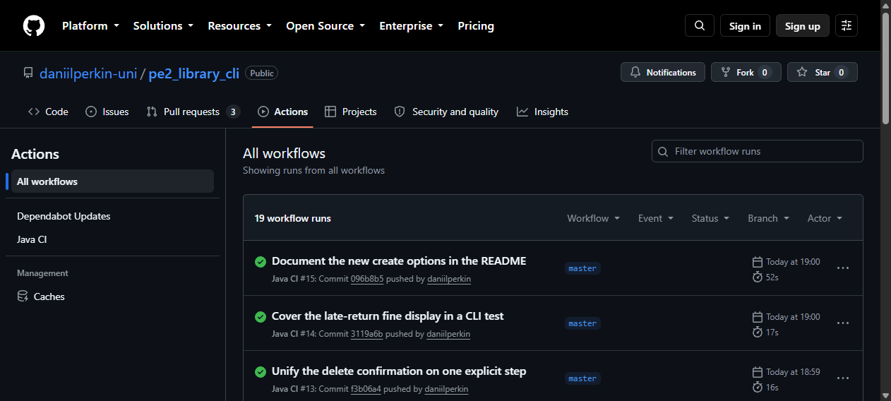
master: ./mvnw -B verify on JDK 21 — build, all 108 tests, coverage gate. The three latest runs, all green.The same command, locally
[INFO] Tests run: 108, Failures: 0, Errors: 0, Skipped: 0 [INFO] BUILD SUCCESS [INFO] Total time: 4.831 s
Verbatim output of -B clean verify on this machine — warm-cache fast, jacoco gate included. Reproduce: ./mvnw -B verify.
The refactor: one monolith → five layers
LibraryCLI.java — 985 lines
├─ menu + I/O
├─ loan / return / fine math
├─ CSV parsing via String.split(",")
└─ reportscli/ menu + Scanner I/O (the only I/O layer) csv/ RFC-4180-subset parser · save on exit manager/ CRUD per entity + reservations service/ LoanService · ReportService (pure) model/ Book · BookCopy · Customer · Reservation
Services never print — they throw typed exceptions and the CLI catches and renders them. The audited bugs from the original code are each pinned by a test: the loan guard order, return authorization, the naive CSV split, uncaught InputMismatchException, hardcoded fixture paths, plus deletion and startup guards.
What it does
- Nine-option German menu — Bücher, Buchkopien, Kunden, Ausleihe, Rückgabe, Suche, Vormerkungen, Berichte, Beenden.
- Loans on a real clock — 21-day loan period, then 0.50 € per overdue day, itemized on return.
- FIFO reservations per ISBN — queue view and cancellation; the waiting list matters as soon as every copy of a title is out.
- State that survives restarts — saved on clean exit, reloaded on next start; quoted CSV fields and umlauts handled; corrupt saved data refuses to load instead of crashing.
Source: github.com/daniilperkin-uni/pe2_library_cli (public).
@pe1-selection-wheel · section live
PE1 Selection Wheel
A Swing wheel-of-fortune selector where the spin is real physics: drags and random spins decelerate at a constant −20 °/s² and land under the pointer on whichever animal the math picks. The wheel below is the app itself, ported — the deceleration, the section index and the stop conditions come straight from the project's pure Java classes.
Java 21Swing / AWTMavenJUnit 5 · AssertJJaCoCoGitHub Actions · xvfbEDT-safe
Live — drag the wheel and release to flick it, click it mid-spin to stop it dead, press Space/Enter (or the button) for a random spin at 180–360 °/s. The animation advances in the app's own 10 ms steps of SpinStep.compute, and the selection under the pointer is the same floor(n + angle % 360 / 24°) % n. Spin speed and direction, deceleration and landing are validated 1:1 against the Java classes — 8,892 generated test vectors, zero mismatches.
verify — JUnit 5 + AssertJ, 0 failuresScreens from the running app
Captured from the real app on this machine (java -cp target/classes selectionwheel.MainWheel): at rest, mid-spin at two speeds, after coming to rest, and the runtime file-loading dialog.
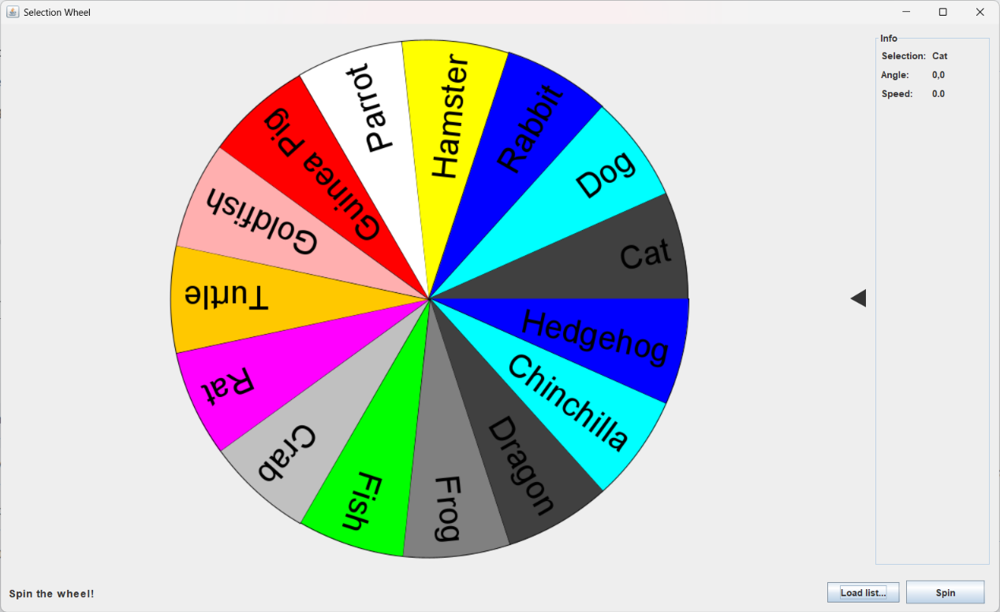
itemlist.txt, borders on, the Info panel showing Selection / Angle / Speed, result bar idling on “Spin the wheel!”.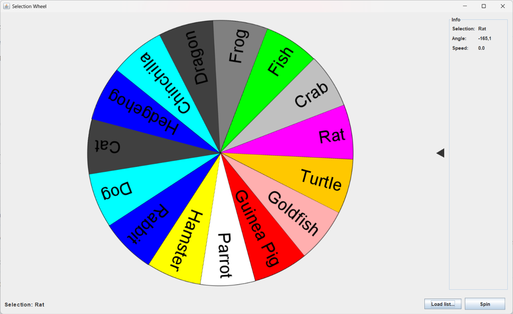
floor(15 + (−165.1 % 360) / 24) % 15 = 8 → “Rat”, exactly the wedge under the pointer. The inline result bar names it; no modal dialog ever blocks the flow.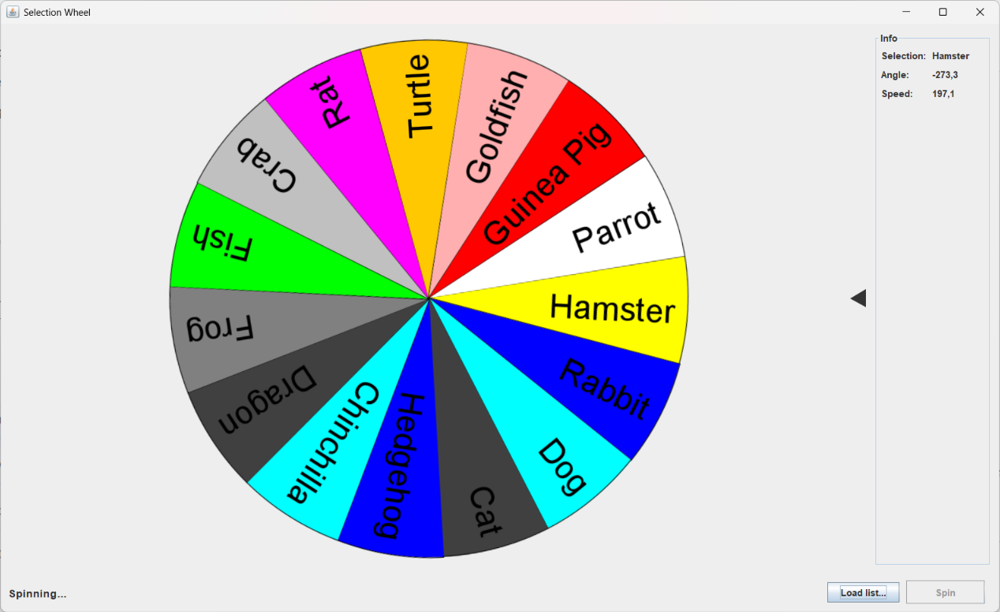
v² / 2a ≈ 970° (2.7 more turns) of deceleration still ahead.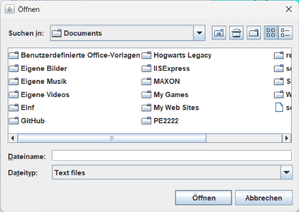
Painting a wheel without a display
The renderer was extracted so it can paint into a BufferedImage with no window involved — the images below come straight from WheelRenderer.render(model, 1200, 1200). It is deliberately rotation-independent: the model's angle is applied by the component at paint time, so the cached image stays valid while the wheel turns.
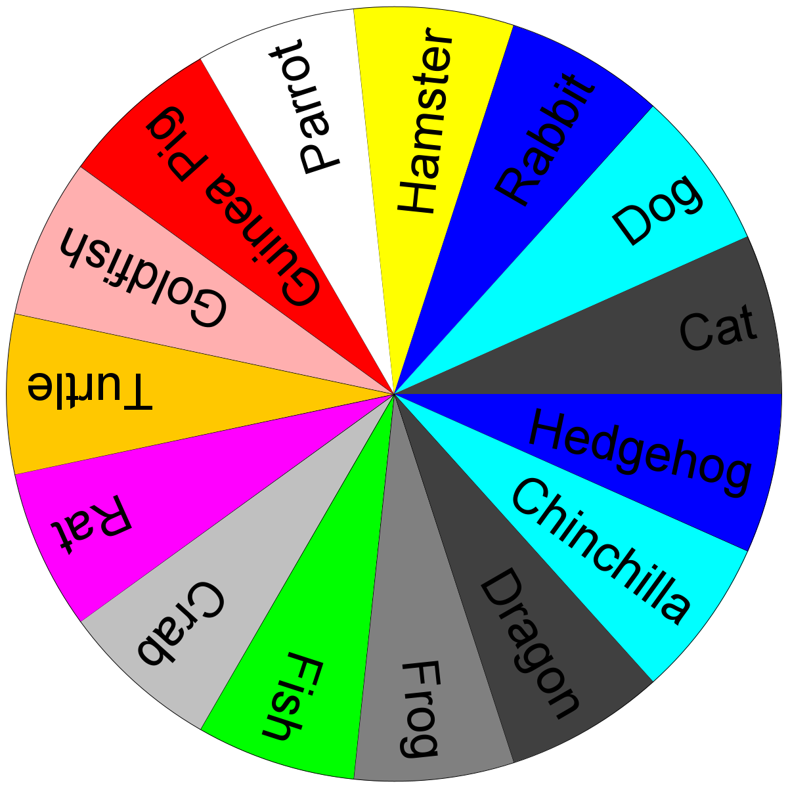
CIRCLE shape, 15 sections — this exact frame also seeds the canvas widget above.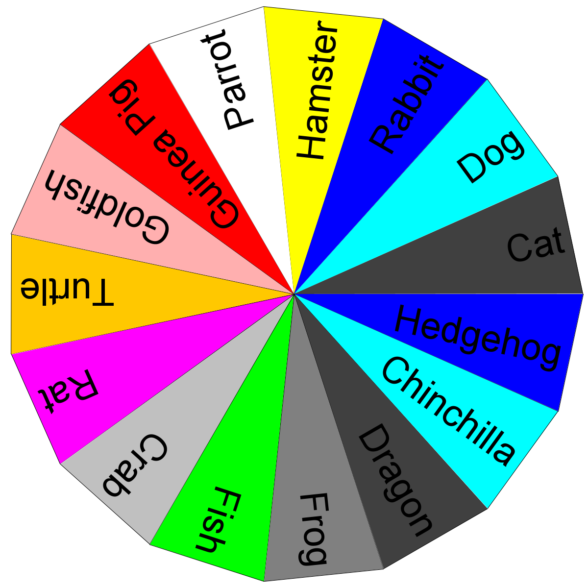
UMBRELLA — setShape(Wheel.Shape.UMBRELLA) swaps the fill geometry, everything else is shared.Architecture: three pure layers around a Swing shell
selectionwheel/ ├─ WheelModel state: items · angle · spin params │ — zero Swing imports ├─ WheelMath pure fns: section angle · [-360,360) │ normalize · selection index · drag delta ├─ SpinStep pure record: one 10 ms tick → │ (delta°, new speed, stop?) ├─ TickMath pure fns: pointer polygon geometry ├─ Wheel · Tick · SelectionWheel Swing views ├─ WheelRenderer paints into a BufferedImage └─ MainWheel JFrame · keyboard · inline result bar
// SpinStep.compute — the entire spin physics.
public static SpinStep compute(double currentSpeed, int direction,
double deceleration, double dtSeconds) {
double delta = direction * (currentSpeed * dtSeconds);
double nextSpeed = currentSpeed + deceleration * dtSeconds;
if (nextSpeed <= 0) { return new SpinStep(delta, 0, true); }
return new SpinStep(delta, nextSpeed, false);
}Everything a spin needs is derived from three lines of arithmetic: the landing angle is the sum of the per-tick deltas, the duration is v / 20 s, and the selection is a modulo. That is why the whole physics could be asserted headlessly — and why the widget above can replay it in a browser at a fixed 100 Hz, catching up with the wall clock in 10 ms steps.
Engineered, not just built
- The wheel no longer rotates twice on resize — the base image used to bake in the rotation and have it applied again at paint, desyncing pointer and selection; the renderer is now rotation-independent (
WheelPaintTest). - The pointer survives repaints — the tick polygon's scaling used to compound on every paint; geometry now returns a fresh, idempotent polygon (
TickMathTest). - The sidebar keeps its width — selecting a longer item name used to re-lay-out the frame and make the wheel jump (
MainWheelInfoPanelTest). - Font auto-sizing is a binary search — it replaced an O(n) re-rasterize loop and fixed a height-overflow edge on narrow sections.
- No
Thread.sleep, anywhere — the spin rides ajavax.swing.Timeron the EDT, a detached wheel stops its timer, and the tests synchronize onCountDownLatchcallbacks instead of sleeping (SelectionWheelIntegrationTest).
Coverage: pure layers 97–100 %, overall 62.6 % — the Swing views carry the remaining gap and there is no threshold gate yet. CI: every push runs ./mvnw -B verify under xvfb on JDK 21, the Swing tests need a display. Source: github.com/daniilperkin-uni/pe1_selection_wheel (public).
@einf-student-organizer · section live
EInf Student Organizer
A JavaFX desktop app for the first semesters: modules with ECTS and status, deadline cards with overdue states, an ECTS-weighted GPA with charts — and a grade simulator that answers "what do I still need for 2,0?". One window, three tabs, CSV persistence, no database.
Java 21JavaFX 21.0.12JPMS moduleMavenJUnit 5GitHub ActionsCSV persistence
Notensimulator — live, running the app's real math
The widget starts with the exact demo semester from the screenshots below. Change ECTS or grades, clear a grade to leave a module offen, add or remove modules — every figure recomputes with the same operations, in the same order, as LeistungsRechner.java: the port is validated to the last bit (see the note below the widget).
Validation of the port (sources in sections/oop_student_organizer/tools/): Java dumps reference values for 307 module-list cases — 300 randomised, six mirroring the app's own NotensimulatorTest, one the demo semester — and Node replays them through the port: 3,070 / 3,070 values identical, strict double equality.
./mvnw -B verify (12 test classes).bak backupsInit to archiveThe Noten tab — where the math lives
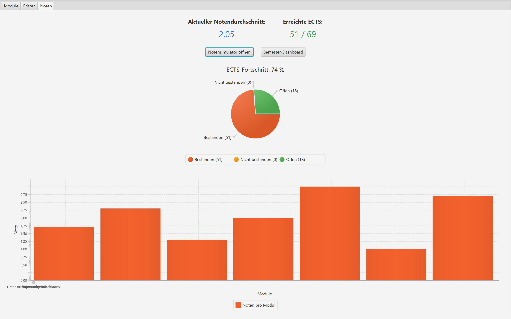
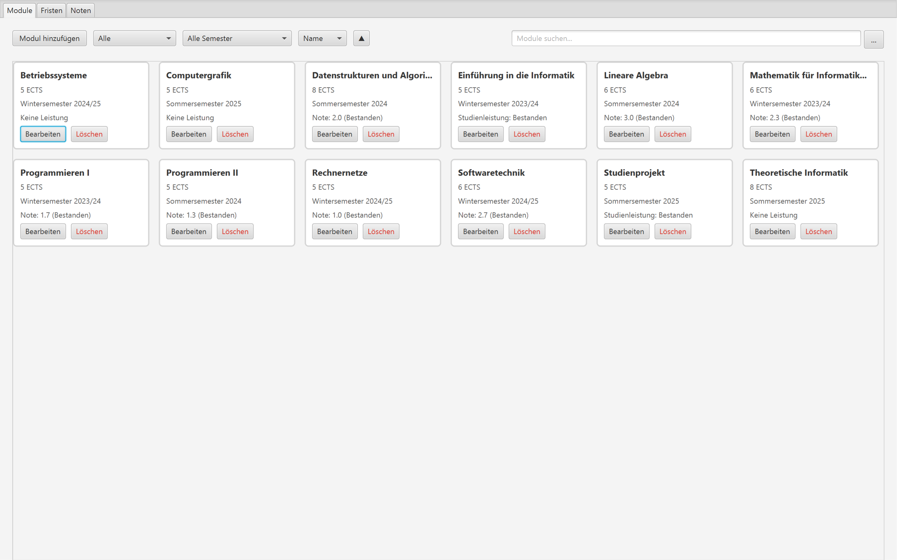
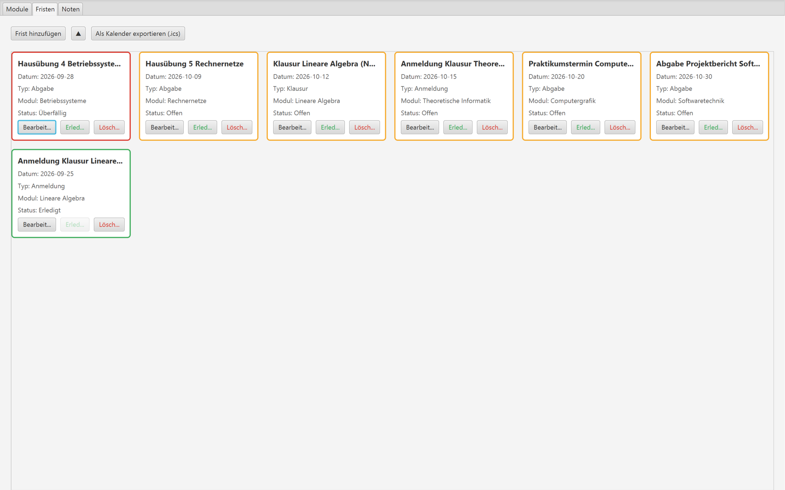
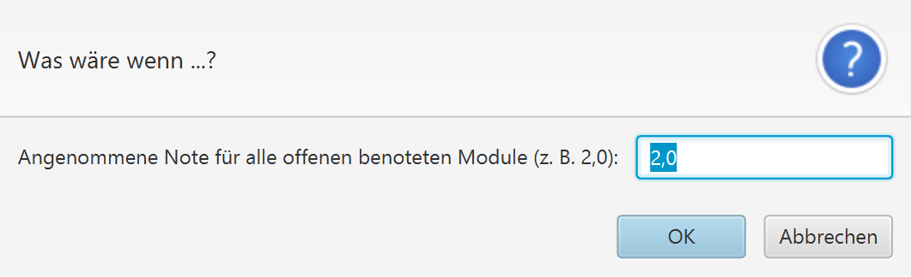
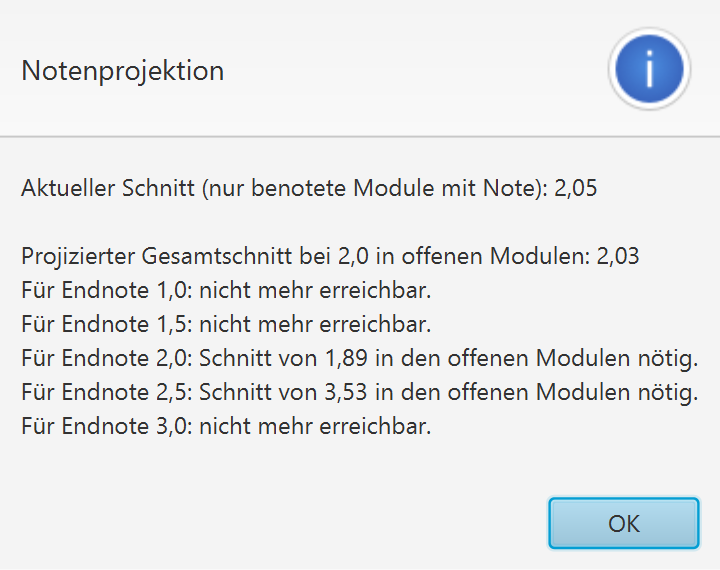
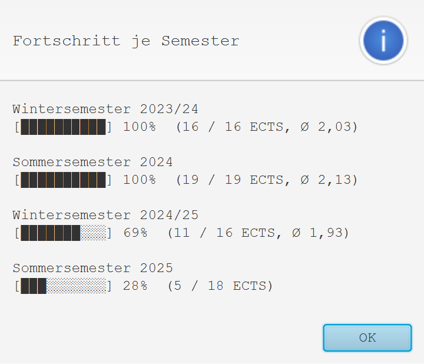
All captures come from a headless capture run against a seeded demo home directory (tools/demo-data/, fictional modules) — the app's real user data never left its own folder.
Three tabs, one window
- Module — cards per module with ECTS, semester and Leistung (Prüfungsnote or Studienleistung), searchable and filterable; module add/edit validated ("ECTS müssen größer als 0 sein.").
- Fristen — Anmeldung / Abgabe / Klausur deadlines with the three-colour state model, done-marking, and an iCalendar (.ics) export of every deadline.
- Noten — the ECTS-weighted average, passed/total ECTS, the progress pie, the grade chart, the Notensimulator and the per-semester dashboard.
Under the hood
The simulator, solved for x
// LeistungsRechner.java — "what do I need for endnote X?"
double rest = zielnote * (fixEcts + offenEcts) - fixNoteEcts;
double noetig = rest / offenEcts;
if (noetig < 1.0 || noetig > 5.0)
return Optional.empty(); // UI: "nicht mehr erreichbar"Shape of the codebase
com.example.einf (JPMS module) ├─ Main load/save · wiring · exit flush ├─ HomeController one FXML, all @FXML refs │ ├─ ModuleTabController search · filters · cards · dialog │ ├─ DeadlineTabController states · done · ICS export │ └─ GradesTabController GPA · charts · Notensimulator ├─ Modul · Deadline · Semester · Leistung │ (Pruefungsleistung · Studienleistung) ├─ LeistungsRechner · EctsFortschritt · SemesterStatistik └─ SpeicherManager · IcsExporter
The tab logic was extracted from the former 674-line HomeController into a coordinator plus one controller per tab (674 → 189 lines), while the single FXML stayed untouched on purpose — no fx:include rewrite on a UI that deliberately has no FXML-loading test coverage. Persistence is equally deliberate: two semicolon-separated CSVs with custom escaping (\; / \n), a .bak copy before every overwrite, and a legacy four-column reader that still loads module files written before the split. The simulator math is pinned by its own test class, and the website widget is pinned against the same implementation.
Source: github.com/daniilperkin-uni/oop_student_organizer (public).
@computergrafik · section live
Computergrafik
Nine exercise sheets that climb from C++ fundamentals to a CPU raytracer and real-time OpenGL. Every image below was captured from the actual builds, and the widget re-renders the Blatt 04 scene live in your browser — a 1:1 port of the exercise's renderer, verified byte-identical to the native output.
C++17CMakeOpenGL 4.5GLFW · GLMImGuitinygltfctestGitHub Actions
01 C++ fundamentals · 02 image pipelines · 03–04 raytracer · 05 transformations (written) · 06 rasterizer · 07 image filters · 08 instancing · 09 glTF shading
Live — the Blatt 04 scene (32 spheres, 16 colored point lights, mirror floor) re-rendered in JavaScript on your CPU: the same scene and the same math as the C++ build — at 600×600 the port produced the identical PPM, byte for byte. Switch shadows or reflections off to feel what they cost.
Blatt 03–04 · the raytracer
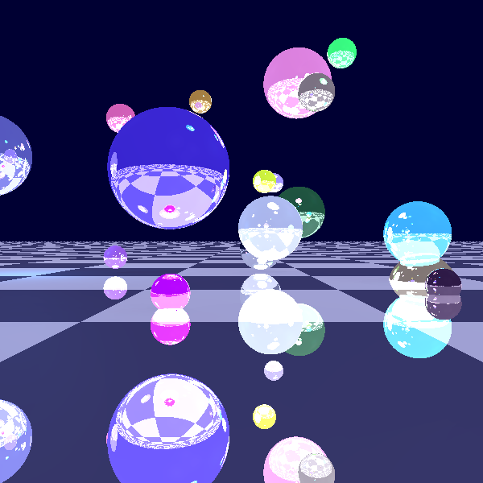
main.cpp — the Phong term the widget above replays
// Diffuse reflection (Lambert).
const double diff_dot = std::max(0.0, surface_normal.dot(light_direction));
const Vec3d diffuse = std::get<1>(phong_coeff) * diff_dot * light_color;
// Specular reflection (Phong).
const Vec3d reflection_direction =
2 * surface_normal.dot(light_direction) * surface_normal - light_direction;
const double spec_dot = std::max(0.0, reflection_direction.dot(view_direction));
const Vec3d specular = std::get<2>(phong_coeff) *
std::pow(spec_dot, std::get<3>(phong_coeff)) * light_color;
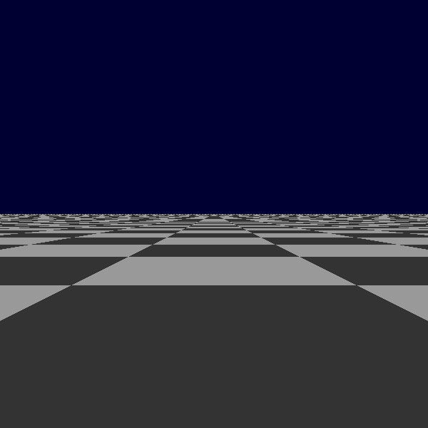
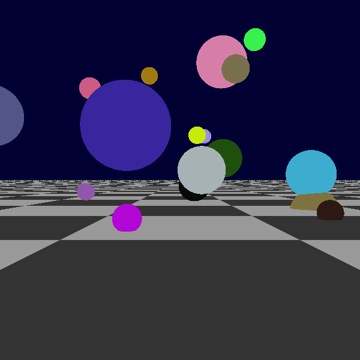
ctest compares this against the in-repo reference and fails on more than 0.1% differing pixels — ours comes out 1 pixel off in 360,000.Blatt 02 · image pipelines, from PPM bytes to colour spaces
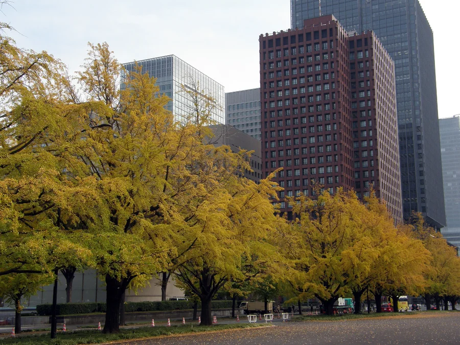
Blatt 02 — drag the handle: the original photo vs the colour-key effect (exercise 4, computed in HSV). The other kept results — grayscale and black/white:
Blatt 06–07 · software rasterizer & image filtering
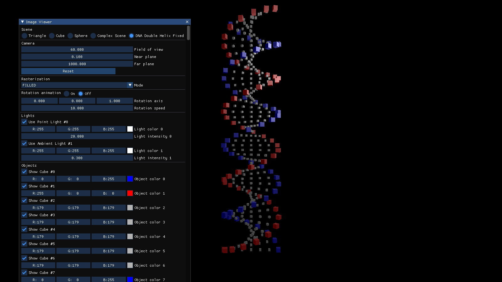
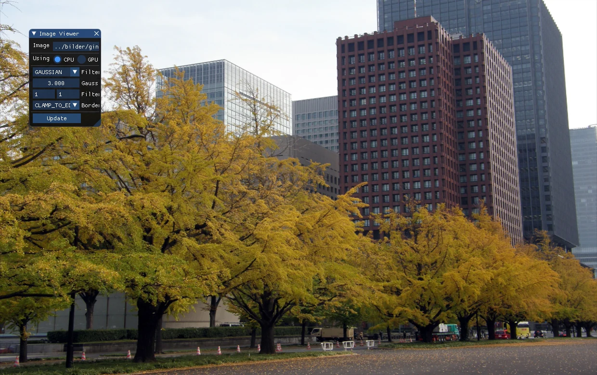
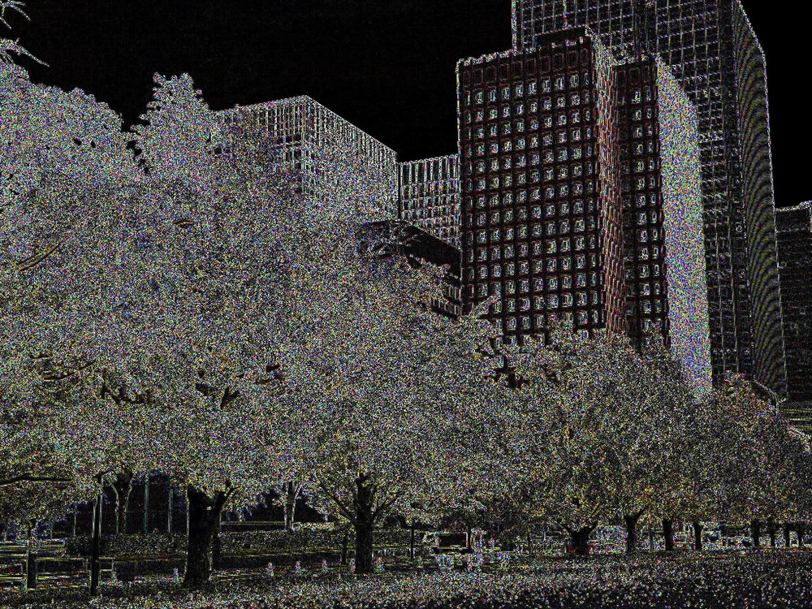
Blatt 08 · instancing and imposters
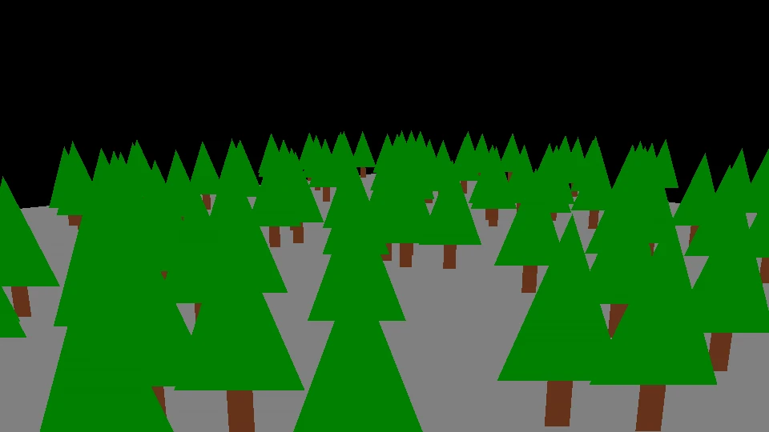
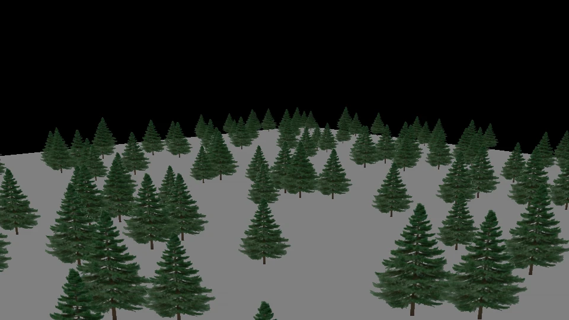
Blatt 08 — same forest, same camera; drag to compare: 192 trees as full instanced 3D geometry (left) vs as camera-facing billboard imposters (right). All buffers, VAOs and textures go through Direct State Access (OpenGL 4.5).
Blatt 09 · glTF scene shading
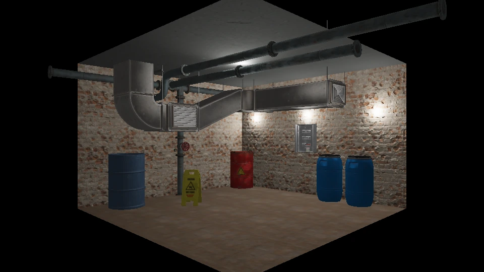
scene.glb was the one file missing from the public repo — this frame was captured from the original Aufgabenblatt 9 course files.Build & verification: one CMake tree builds every sheet; GitHub Actions runs a job per sheet plus the root build on every push, and the Blatt 03 ctest reference check rides along. All captures come from a headless Docker pass (Xvfb + software GL) against the archived code. Source: github.com/daniilperkin-uni/computergraphik_aufgaben.